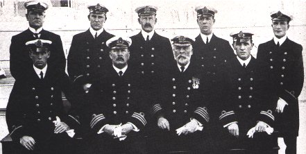
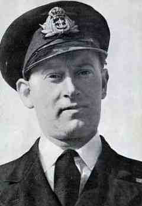
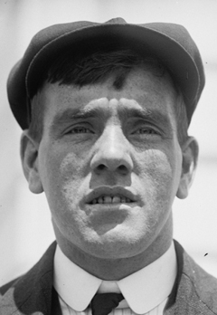
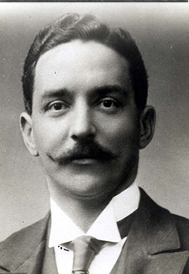

The Passengers
Titanic was built to plough the North Atlantic route from Southampton to New York, a lucrative route for any shipping line because of the volume of passengers involved. She made two stops en route. The first was at the French port of Cherbourg where many American first class passengers were taken on board to travel home after their grand tour of Europe.
The last stop before heading out into the Atlantic and the fate we now know awaited her was at Queenstown, now called Cobh in County Cork, Ireland. Here, hundreds of steerage (third) class passengers boarded Titanic, many having sold everything they owned in order to buy a ticket for a new start.
The Titanic passenger list ranged from the richest people in the world to the poorest, setting out to make a new life in America. It is perhaps the range of people on board with a wide range of reasons for travel which makes the ship’s story so fascinating. The class system which existed at the time ensured that these different social classes never met nor mixed while on board, except perhaps during the very last minutes of Titanic’s life.
Famous passengers on the Titanic included Molly Brown, wife of a Colorado silver mine entrepreneur, and John Jacob Astor. Molly Brown became famous in her own right for being the only woman to have rowed a lifeboat to safety.
Titanic survivor stories have given the world a wealth of information regarding what actually happened during the fateful last minutes of the ill fated luxury liner and the people in the Titanic. One of the most touching stories regarding the passengers on the Titanic is the tale of an elderly wealthy couple, the Straus'. When it became apparent that no male passengers on the Titanic could be allowed to board the limited lifeboats, Mrs. Straus chose to stay by the side of her husband; even though it meant certain death. The couple perished with the ship.
While the world is often taken with the stories of the famous passengers on the Titanic, there were also hundreds of second and third class passengers who also perished with the ship.
The Crew and Others of Significance
There were over 900 of a crew on board Titanic, ranging from the officers who took command of the various watches or shifts right down to glass washers and galley staff. In between were engineers, deck staff, pursers, stewards, restaurant staff and postal staff. Just over two hundred crew members survived the Titanic disaster
About the Captain...The maiden voyage of the Titanic was to be 62 year old Captain Smith's last voyage before he retired. Smith was married with a young daughter. Very little is known about his actions on the Titanic after the collision - he was last seen on the bridge of the sinking ship. Captain Smith went down with his ship and his body was never recovered.
And the band played on... An eight-man band led by violinist Wallace Hartley, demonstrated extreme courage by entertaining passengers as Titanic sank. Their music most likely averted panic and made the passengers feel that things were not as bad as they appeared.
The Band:
Hartley, Wallace Henry - Band leader
Brailey, Theodore - Pianist
Bricoux, Roger - Cellist
Clarke, J. Fred C. Bass - Violist
Hume, John (Jock) Law - First violinist
Krins, George - Violist
Taylor, Percy, C. - Cellist
Woodward, J. W. Cellist
After all, how bad could things be if the band was still playing? Some witnesses stated that the band played until Titanic slipped beneath the waves. Although it has been argued that the steep incline of the deck would have prevented the band from playing until the bitter end, it is clear that they played until it was no longer possible.
None of the eight musicians were employed by the White Star Line. They all worked for Messers C.W. and F.N. Black of Liverpool, England and were ticketed on Titanic as second class passengers. All eight musicians lost their lives.
Hartley, Wallace Henry - Band leader
Brailey, Theodore - Pianist
Bricoux, Roger - Cellist
Clarke, J. Fred C. Bass - Violist
Hume, John (Jock) Law - First violinist
Krins, George - Violist
Taylor, Percy, C. - Cellist
Woodward, J. W. Cellist

Back row from Left to Right: Herbert McElroy, Charles Lightoller, Herbert Pitman, Joseph Boxhall, Harold Lowe
Back row from Left to Right: Herbert McElroy, Charles Lightoller, Herbert Pitman, Joseph Boxhall, Harold Lowe
Front row from Left to Right: James Moody, Henry Wilde, Edward Smith, William Murdoch
Officers of the Titanic:
Captain - Edward J Smith (did not survive)
Chief Officer - Henry F Wilde (did not survive)
First Officer - William M Murdoch (did not survive)
Second Officer - Charles Herbert Lightoller (survived)
Third Officer - Herbert John Pitman (survived)
Fourth Officer - Joseph Groves Boxhall (survived)
Fith Officer - Harold Godfrey Lowe (survived)
Sixth Officer - James P Moody (did not survive)
Chief Purser - Herbert McElroy (did not survive)

Quartermaster:
Quartermaster:
Robert Hitchens (survived)
He was steering Titanic at the time of the accident.

Lookout:
Lookout:
Frederick Fleet (survived)
He was the first to spot the iceberg. Fleet was in the last half hour of his watch from the crows nest when he saw a massive iceberg no more than 500 yards away. Fleet was saved in lifeboat #6.
Designer of the Titanic:
Thomas Andrews
Since Andrews helped design Titanic, he undoubtedly knew the most about the Titanic and her construction. He was on the Titanic to observe Titanic's performance and note anything for future design improvements. Andrews went down with the ship.

Director of White Star Lines: